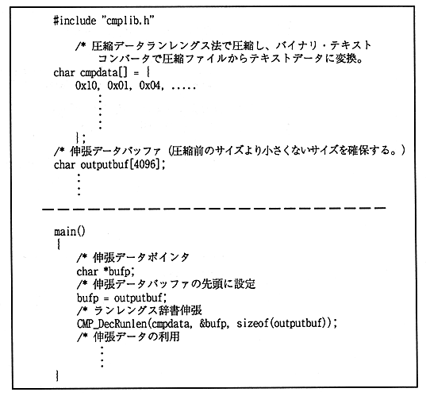

An example of using a library function to create a program using the extension library “CMPLIB.LIB” is shown below.
When starting the function, it is assumed that the compressed data is in memory that can be accessed directly from the main CPU.
Usage example 1
The following figure shows an example when compressed data is included in the source file in the form of a C language array.

Figure 1.6 Extension library usage example 1